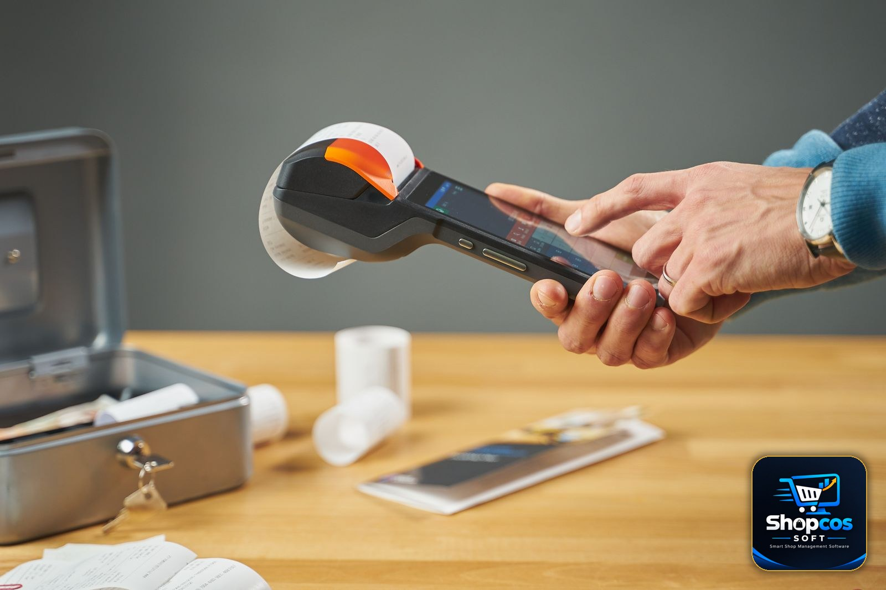

"FBR ne digital invoicing lazmi kar di hai." If you run a small shop in Pakistan — a kiryana store, a general store, a medical store, a small wholesale counter — you have heard some version of that sentence this year. Sometimes from a supplier. Sometimes from a WhatsApp forward. Sometimes from a salesman who, conveniently, is selling the exact system you now "urgently" need.
Here is the plain answer, up front: for most small shops, mandatory FBR digital invoicing does not apply — yet. FBR's own rules draw a line between large retailers and small shopkeepers, and there is a special scheme written for the small side of that line. But "does not apply yet" is not the same as "ignore it forever." The line moves as your shop grows, and it moves quietly — a second branch, a card machine, a bigger electricity bill — so the shopkeeper who understands the rules today is the one who is not surprised by them tomorrow.
This guide explains FBR's digital invoicing rules the way they touch a small shop: what the words actually mean, the six-question test that decides whether the mandatory rules apply to you, the small-shopkeeper scheme, what a proper bill must show even if you are exempt, and the five steps that put you on solid ground. No tax jargon, no scare tactics. Our full FBR e-invoicing guide covers the notified sectors and the 2026 framework in detail; this article is the small-shop version of the same story.
A note before we start: this article explains the rules in plain words. It is not tax advice. FBR changes thresholds and notifications regularly, so confirm your own status with your accountant or the FBR helpline (051-111-772-772) before acting on anything here.
What "Digital Invoicing" Actually Means
Strip away the jargon and digital invoicing is three simple things, all happening at your counter:
- The bill is made by software, not by hand. The sale is entered in a billing system, which prints an itemized invoice — every item, its price, and the tax shown as its own line.
- The sale is reported to FBR as it happens. For businesses in the mandatory net, the billing system sends each invoice's data to FBR's computerised system in real time, and FBR returns a unique invoice number.
- The customer can check it. The printed bill carries a QR code. Anyone can scan it with FBR's Tax Asaan app and see whether FBR actually received that sale. Our guide on how to verify an FBR POS invoice walks through exactly what that QR code proves — and what it does not.
That is the whole idea: every sale visible to FBR the moment it happens, so sales cannot quietly disappear off the books. The question for your shop is not whether the idea is good or bad. The question is whether the mandatory version of it applies to you.
The One Question That Decides Everything: Are You a Tier-1 Retailer?
FBR's mandatory POS integration and real-time invoicing rules apply to Tier-1 retailers, a category defined in Section 2(43A) of the Sales Tax Act, 1990. You only need to meet one of the tests below to count as Tier-1 — and the tests are wider than most shopkeepers realise. Run through them honestly:
| The test (plain words) | What it looks like in real life |
|---|---|
| 1. You are part of a chain | Your shop is one unit of a national or international chain of stores — same brand, several outlets. |
| 2. You are in an air-conditioned mall or plaza | Your shop sits inside an air-conditioned shopping mall, plaza, or centre (kiosks excluded). |
| 3. Your electricity bill is over Rs 1,200,000 in 12 months | Add up your last 12 monthly electricity bills. If the total crosses Rs 1,200,000, you qualify — even if your shop is small. |
| 4. Your shop is 1,000 square feet or bigger | A big-floor shop, measured by area, not by how busy it looks. |
| 5. You take card payments through a POS machine | You have a bank card machine at the counter that accepts debit or credit cards. |
| 6. You are a wholesaler-cum-retailer, or your turnover is very large | You import or buy in bulk and sell retail as well, or your turnover crosses the very high thresholds FBR notifies (Rs 200 million in the current framework). |
If none of these describes your shop, the mandatory integration rule almost certainly does not apply to you today. If even one does, it does — and the obligation is continuous, not tied to a single deadline. FBR can also notify other persons or categories as Tier-1, so the list is a floor, not a ceiling.
The trap most shops miss: Rs 1,200,000 of electricity over 12 months is only about Rs 100,000 a month. A shop running several freezers, air conditioning through a Punjab summer, and bright lighting can cross that line without ever feeling "big." Add up your last twelve bills — the answer might surprise you.
The Small-Shopkeeper Scheme: FBR's Own Simpler Path
Here is the part the scare stories leave out. In 2026, FBR introduced a special tax procedure for small shopkeepers (SRO 1166(I)/2026). Under it, eligible small shopkeepers are exempt from installing a POS system or digital invoicing infrastructure. The scheme offers simplified filing and relief from certain withholding and minimum-tax provisions. Compliant shops display a "green plate" — a QR plate outside the shop — which generally protects the shop from routine field visits by tax officers.
That is a genuine relief, and it is the reason the honest answer to "does digital invoicing apply to my shop?" is usually "not the mandatory version." But two warnings come with it. First, eligibility is FBR's decision, not yours — your accountant can confirm whether your shop qualifies. Second, the exemption is from the infrastructure, not from keeping proper records. A shop under the small-shopkeeper scheme still needs clean, itemized, sequentially numbered bills and proper books. The scheme makes compliance simpler; it does not make it optional.
Do not let anyone sell you expensive "FBR integration" before you know which category you fall into. The first step is always the category question, never the purchase.
What FBR Still Expects From Every Shop
Exempt or not, every shop benefits — and is safer — when its bills look the way FBR expects a tax invoice to look. A proper bill carries:
- Your business name, address, and NTN/STRN — the tax identity FBR knows you by.
- A unique, sequential invoice number — no gaps, no duplicates, no "bill 1" written by hand ten times.
- Date and time of the sale.
- Item-wise detail — what was sold, how much, at what rate.
- Sales tax shown separately — the standard rate is currently 18% for most taxable goods, though some items differ. The tax amount must be visible as its own line, not buried in the total.
- The grand total.
- A QR code for verification — required for integrated businesses; good practice for everyone else, and increasingly what customers expect to see.
Compare that with the typical handwritten bill — "2 cheezen, Rs 450" — and the gap is obvious. An itemized invoice with tax shown separately is not just compliance. It is the record your accountant needs at filing time, the proof your customer needs for a return, and the evidence that protects you if anyone ever questions a sale.

The Quiet Triggers: How a Growing Shop Becomes Tier-1
The most dangerous moment in this whole story is not the day FBR announces a new rule. It is the ordinary Tuesday when your shop quietly crosses a threshold and nobody tells you. These are the five crossings to watch:
1. You install a card machine
The day you accept your first debit or credit card through a bank POS machine, you meet one of the Tier-1 tests. Card acceptance is convenient for customers and good for sales — just know that it changes your FBR category at the same time.
2. Your electricity bill creeps up
A second freezer, a bigger air conditioner, longer hours. The Rs 1,200,000 twelve-month total is a slow creep, not a sudden jump. Check the running total every few months, the way you would check stock.
3. You open a second branch — or move into a mall
A second outlet under the same brand, or a move into an air-conditioned plaza, can each trigger Tier-1 status on their own. Plan the compliance step into the expansion budget, not after it.
4. Your floor area crosses 1,000 square feet
An extension, a merged next-door shop, a bigger godown that becomes retail space — area counts, whatever you call it.
5. Your turnover jumps
A good year, a big wholesale contract, a new product line that takes off. Growth is the goal — just remember that the biggest turnover thresholds in the law exist, and your accountant should be watching them with you.
None of these is a reason to stop growing. Every one of them is a reason to check your category the month it happens, instead of discovering it during an inspection a year later.
If You Cross the Line: 5 Steps to Get Ready
- Confirm your status with your accountant. Which test did you meet, and when? That single answer decides everything else — and it is a one-conversation job, not a research project.
- Get your registrations in order. An active NTN, and an STRN (sales tax registration) if you are registered for sales tax. Your business name, address, and category must match across FBR's IRIS system. An e-invoice is only as valid as the tax identity behind it.
- Use billing software that can integrate. This is the step most shops get wrong by buying twice: first a cheap billing app that cannot talk to FBR, then a second system that can. If you are near any Tier-1 threshold, choose software with FBR-ready invoicing — itemized tax invoices, sequential numbering, and digital storage of every sale — from the start. Our guide to choosing POS software in Pakistan explains what to look for.
- Integrate through a licensed provider. POS integration with FBR happens through licensed integrators — PRAL, FBR's own technology arm, provides integration services to taxpayers free of cost under the framework. Only licensed providers can do this integration, so verify the license before signing anything or paying anyone.
- Keep billing through load shedding. Real-time e-invoice transmission needs an internet connection at the moment of sale — a real operational change for shops used to billing through power cuts. Choose a setup that bills offline at the counter and syncs when the connection returns, so the counter never stops. Our guide to offline vs online billing software explains why that matters in a Pakistani shop.
5 Mistakes Small Shops Make About Digital Invoicing
1. Printing a fake FBR logo or QR code
Some shops print an FBR logo or a made-up QR code on ordinary bills to look "official." Do not do this. A QR code that does not verify against FBR's records is worse than no QR code at all — a customer who scans it and gets "not found" will assume the worst, and FBR treats misrepresentation seriously. If you are not integrated, your bill should simply be a clean, honest bill.
2. Buying "FBR-approved" software from a random seller
There is no shortcut badge you can buy from a WhatsApp salesman. Integration goes through licensed providers. Before you pay anyone, ask for the license, check it, and confirm the price in writing — including whether it is one-time or monthly. Our comparison of monthly subscription vs one-time payment shows what the two pricing models really cost over three years.
3. Believing every WhatsApp deadline
"Last date 30 November, warna fine!" FBR's rules arrive through SROs and notifications on fbr.gov.pk, not through forwarded messages. Treat any deadline you hear on WhatsApp with healthy suspicion and confirm it from an official source or your tax consultant. The earlier guide's warning stands: the combination of real fines and vague understanding has created a small industry of fear, and fear is a product somebody is selling.
4. Keeping handwritten bills and no records
Electronic records must be kept for six years under the framework. A register book that gets damp in the monsoon, or a pile of thermal-paper bills that fade in six months, is not a record-keeping system. Digital billing that stores every sale automatically is the cheapest insurance a small shop can buy.
5. Assuming "small" means "invisible"
Small shops are not invisible to FBR — they are simply handled under a different, simpler scheme. The shops that get into trouble are not the small ones; they are the ones that grew past a threshold and kept billing like nothing had changed. Growth plus old habits is the combination that hurts.
The Bottom Line
Digital invoicing in Pakistan is not one rule for every shop. It is a system with a line drawn through it: on one side, Tier-1 retailers and notified sectors must report every sale to FBR in real time; on the other, small shopkeepers follow a simpler scheme, exempt from POS and digital invoicing infrastructure, with a green plate to show for it. Your job is to know which side of the line your shop stands on — and to notice the day it moves.
That is a short checklist, and it is worth doing this week:
- Run the six-question Tier-1 test above, honestly, with your real numbers.
- Add up your last twelve electricity bills.
- Ask your accountant whether you qualify for the small-shopkeeper scheme.
- Check that your bills are itemized, sequentially numbered, and stored digitally — not handwritten, not fading in a drawer.
- If you are near any threshold, choose billing software that is ready for FBR invoicing before you need it, not after.
Do those five things and you have done more than most shops in your bazaar. The rules are real, the fines are real — FBR has reported penalties from Rs 500,000 to Rs 3 million for POS-system violations — but so is the simpler path FBR wrote for small shops. Take it, keep your records clean, and let your shop grow without the compliance surprise.
Photo credits: Close-up of a printed shop receipt showing tax lines and totals photo by Towfiqu barbhuiya · Hands operating a receipt printer with printed receipts photo by Hook Tell · Tax forms, calculator and office supplies on a desk photo by Nataliya Vaitkevich — all via Pexels.